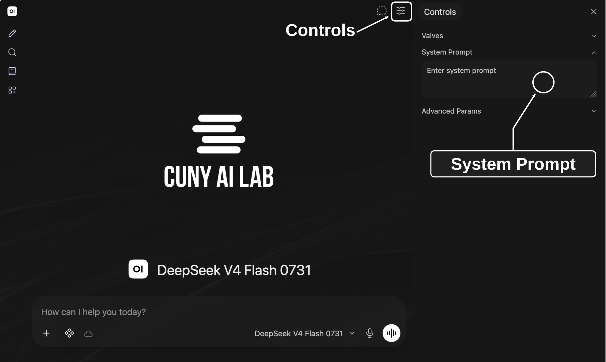
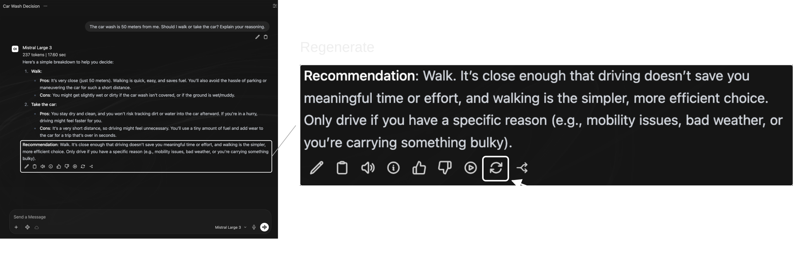
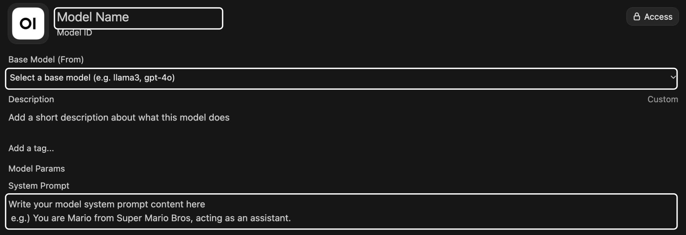
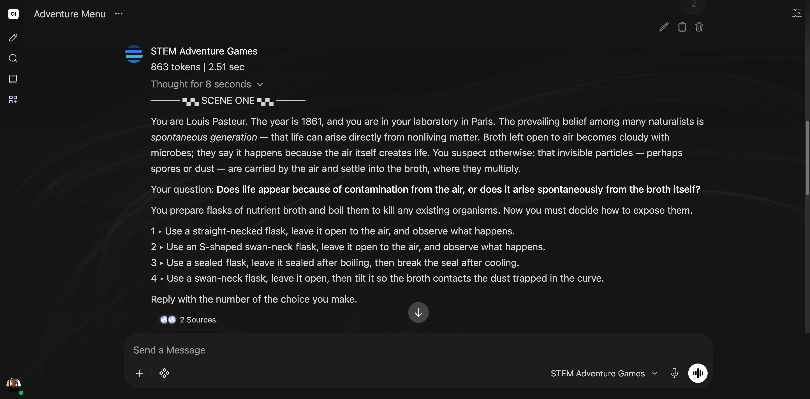

Getting Started with the CUNY AI Lab Sandbox
Sandbox Workshop Series Part 1/3
Developed and led by Zach Muhlbauer
New Media Lab · Room 7388.01
CUNY Graduate Center
Workshop Roadmap
- Composing system promptsConfigure model behavior with system prompts.
- Curating knowledge collectionsUpload documents so models can reference them.
- Configuring skills and toolsAdd web search, code execution, and reusable instructions.
Workshop Agenda
- Request individual access and sign in
- Define system prompts
- Compare responses from small models
- Revise in-chat system prompts
- Review Workspace model cards
- Choose teaching or research examples
- Clone model cards and test revisions
Check monthly usage at Model Access.
Request Access
ailab.gc.cuny.edu/request-access/
- Choose My own access and sign in with CUNY Login.
- Complete your details, select CAIL Sandbox, and submit your application.
- After approval, open chat.ailab.gc.cuny.edu and select Continue with CUNY Login.
System Prompts
System prompts are setup instructions that describe how a model should behave.
User Prompts
Questions or tasks you enter in chat.
Custom Models
You create a custom model by choosing a base model, such as Gemma, and adding instructions and documents for it to use.
Select Models

Chat Features
- Upload Files (+)
- Attach images, PDFs, or documents.
- Integrations
- Enable tools that perform operations and skills that give reusable instructions.
- Message actions
- Find actions beneath each response to copy, edit, or regenerate it. Open More (⋯) for additional actions.
Compare Models

Who Was Late?
Compare how two small models interpret this sentence.
The nurse yelled at the doctor because she was late. Who was late?
Send this question to both models.
Winograd Schema Challenge
This challenge tests how models interpret ambiguous pronouns using context and common-sense knowledge. Changing one or two words between paired sentences changes who a pronoun refers to.
In our question, either person could be late.
- Which person does each model choose?
- What assumption supports its answer?
Compare Outputs
Consider this question.
The car wash is 50 meters from me. Should I walk or take the car? Explain your reasoning.
What do you think this person wants to accomplish?
Compare Outputs
Gemma’s Response

Qwen’s Response

Compare Models
Start a new chat, select two models, and send this question.
The car wash is 50 meters from me. Should I walk or take the car? Explain your reasoning.
Save both responses with your question and selected model IDs before adding system prompt instructions.
Add System Prompt

Select Controls at top right of chat. Paste these instructions into System Prompt, then close Controls.
Identify purpose and separate facts from assumptions. Ask one clarifying question when needed. Answer briefly without inventing context.
Regenerate Responses

Compare Responses
- Compare responses before and after adding system prompt instructions.
- Does each response identify your goal and state its assumptions? Does either response invent information or ask unnecessary questions?
- Repeat our opening question about who was late. Do these instructions help identify ambiguity?
Open Workspace

Review Custom Models
Choose Models to find custom model cards. Each combines a base model with setup instructions and any attached resources.
Review Base Model and System Prompt before choosing a card to adapt.
Continue in chat if Workspace is unavailable.
Model Configuration

Choose Model Cards
Teaching
Explore scientific experiments through a text adventure with numbered choices.
Research
Classify edits to Wikipedia’s academic freedom article using quoted evidence.
Clone Model Cards
- In Workspace → Models, find your chosen model and open ⋯ → Clone.
- Rename your copy and give it a unique ID.
- Read System Prompt and identify one instruction to revise.
- Review Access, keep Private, remove copied access grants, and select Save & Create.
Save an initial response before changing instructions.
Add Prompt Suggestions
Add a description and prompt suggestions for tasks your model should support.
Users select your custom model to use its instructions and resources.
Situating System Prompts
STEM Adventure Games

Read Game Instructions
Simulate an interactive game-based learning experience through Choose Your Own STEM Adventure games featuring historically significant scientific experiments. Each stage presents 4 numbered choices based on historically accurate experimental decisions. After each choice, briefly state what the player observes, what the result suggests, and what question remains open.
What should happen after you choose an action?
Adapt Research Prompts
For Compare Wikipedia Edits, paste one pair from sample revisions into your copy.
- Ask it to classify one change and quote evidence.
- Check quotations against both passages.
- Identify an instruction to revise if its classification is unclear.
Draft System Prompts
Define Prompt Components
Use either example. Choose one component to change in your cloned model.
- Purpose — What your model should help users do.
- Procedure — Steps your model should follow.
- Constraints — Boundaries and missing information.
- Format — Length and presentation.
Define Purpose
Describe what your model should help users do.
- Who will use this model?
- Which task or question will they explore?
- What prior knowledge can you assume?
Guide a short text adventure in which players explore how a prism changes a beam of sunlight.
For research, name your question, source material, and intended users.
Write Procedures
Which steps should your model follow?
1. Introduce an experiment about light and colour. 2. Describe an opening scene and a question to investigate. 3. Offer four numbered choices and wait. 4. Describe what players observe after each choice.
For research, check inputs, quote changed passages, then classify changes.
Set Constraints
Specify how your model should handle missing evidence.
Do not invent historical details when sources are missing. Distinguish documented events from invented scenes and choices. If a source is unavailable, explain what cannot be checked.
For research, request missing excerpts and mark uncertain classifications.
Test a request that asks for a detail absent from your sources.
Specify Format
Specify response structure and length.
Write a short scene followed by four numbered choices. Use simple Unicode headings. Wait for a reply before continuing.
For research, use Before and After quotations, categories, and brief explanations.
Refine Instructions
Extend Instructions
Specify what your model should do when a request needs additional guidance.
- Teaching — Explain how to offer a hint or revisit an earlier choice.
- Research — Explain when to request missing passages or mark a classification uncertain.
Select Save & Update, then test that condition in a new chat. After revising, save again and repeat your request.
Review Common Problems
Prioritize Instructions
Check instructions for conflicts. Prioritize essential steps and test whether your model follows them.
Resolve Contradictions
Check whether requested detail fits your length limit. Revise requirements that cannot be met together.
Test User Requests
Test likely requests, including questions about missing evidence.
Retest Revised Prompts
Save each prompt version with its responses. Revise when a test reveals a problem, then repeat that test.
Save Prompts
Save changes to your cloned model. Review Access and select Save & Update. Reuse this model when adding documents in Workshop 2.
Share Custom Models
- Open Access → Add Access and select users or a course group.
- Grant Read access to people who will use your model and Write access to people who will edit it.
- Confirm everyone you share with can access your base model and any attached collections.
Record Comparisons
Save your prompt, model settings, and responses.
| Configuration | Custom model name, base model, system prompt, settings, and date. |
|---|---|
| Test | User request, enabled features, saved response. |
| Judgment | What you checked, evidence from each response, and any change you plan to test. |
Use materials you are permitted to upload and share. Sandbox chats may be stored and accessible to administrators or people you share them with.
Prepare Source Documents
- Save prompt versions and comparison notes
- Request Workspace and Knowledge collection access
- Select public or approved source documents
- Review system-prompt examples
- Continue to Curating knowledge collections